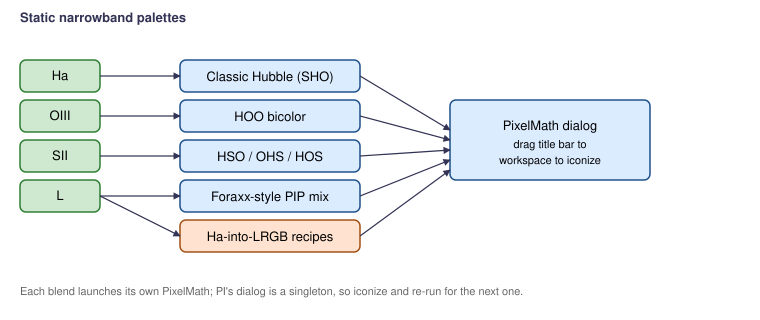

Scripts > EGo > Narrowband Blend Generator
Generates PixelMath process instances for a curated catalog of static narrowband blends — Classic Hubble (SHO), HOO, HSO, OHS, HOS, Foraxx-style, and a few Ha-into-LRGB recipes — using single-letter symbols in the formulas and the PixelMath Symbols field to bind those to real view IDs.

| ID | R | G | B | Note |
|---|---|---|---|---|
| Classic_Hubble | S | H | O | The original SHO Hubble palette. Gold nebulae. |
| HOO | H | O | O | Bicolor Ha + OIII; cleanest output when SII is noisy. |
| HSO | H | S | O | R + G swap of SHO; reddish nebulae. |
| Foraxx-style | PIP-weighted Ha/OIII mix | Smooth NB look without per-pixel masking. | ||
| Ha-into-L | L = max(L, H) | Inject Ha detail into broadband L for LRGB targets. | ||
See the script source for the complete list (12 canonical palettes plus several Ha-into-LRGB recipes).
Formulas reference single-letter symbols (H, S, O, L, R, G, B). The PixelMath Symbols field is constructed from the bindings you set at the top of the dialog. Each blend is opened as its own PixelMath dialog — drag the title bar to the workspace to save it as an icon. (PixInsight has no scripting API to drop a workspace icon directly; launch-and-iconize is the supported path here.)
This script is for static palettes — the channels are combined with fixed coefficients. For per-pixel PIP-gated and spatially weighted blends, see the Dynamic + Spatial NB Blends script.
Part of the EGo PixInsight script set. PCL License 2.0.